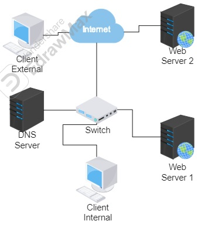
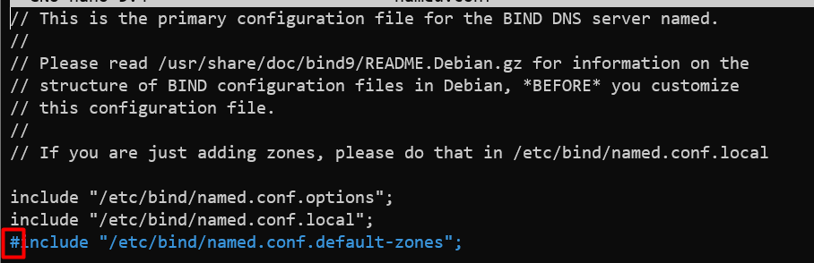
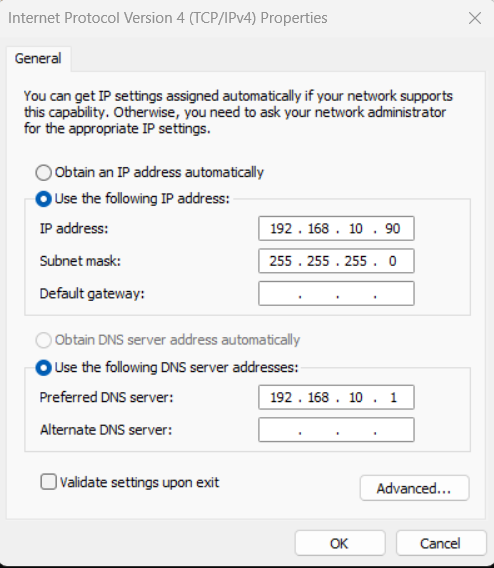
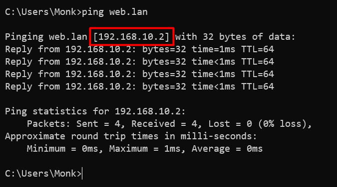
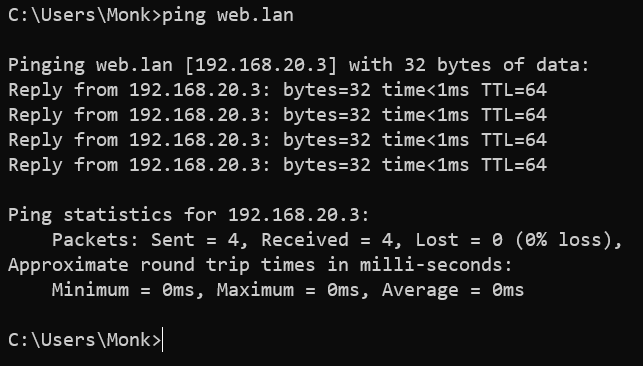
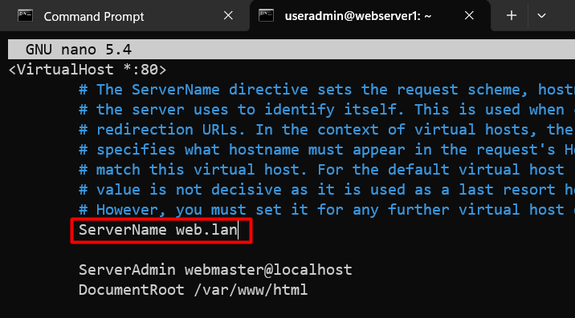
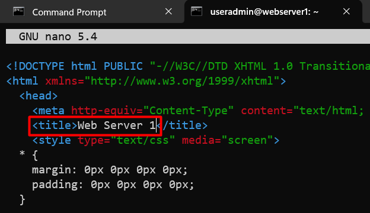
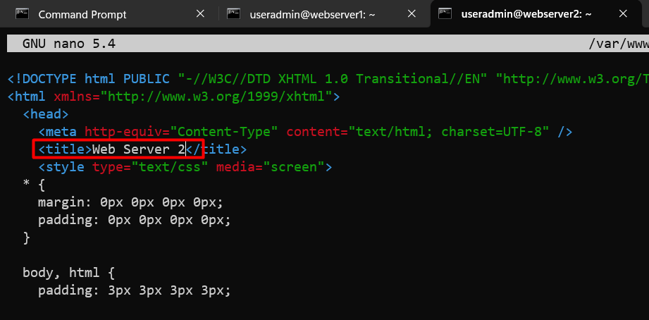
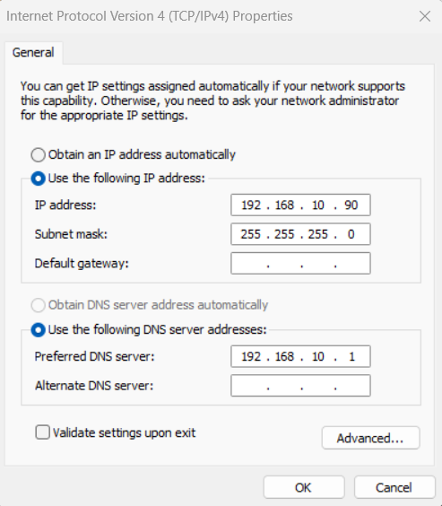
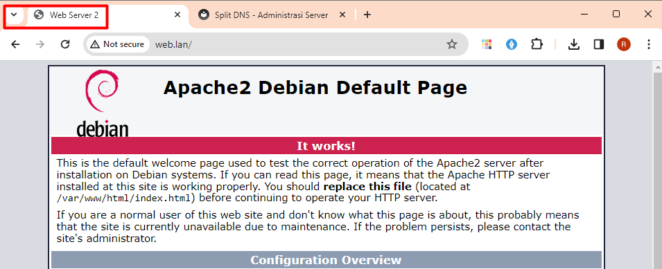

Split DNS
Apa itu Split DNS
Split DNS (Domain Name System) adalah metode konfigurasi di mana server DNS memecahkan nama domain yang sama menjadi alamat IP yang berbeda berdasarkan sumber permintaan DNS Pada dasarnya, ini melibatkan dua set server DNS: satu set untuk penggunaan jaringan internal dan satu set lagi untuk penggunaan jaringan eksternal.
Dalam pengaturan split DNS, ketika sebuah permintaan DNS berasal dari dalam jaringan internal organisasi, itu akan dipecahkan oleh server DNS internal, yang mungkin mengembalikan alamat IP internal untuk sumber daya seperti server, printer, atau perangkat lain dalam jaringan organisasi. Namun, ketika nama domain yang sama diambil dari luar jaringan internal organisasi, server DNS eksternal akan memberikan balasan dengan alamat IP publik yang dapat diakses dari internet.
Konfigurasi ini sering digunakan untuk tujuan keamanan dan efisiensi. Ini memungkinkan organisasi untuk memberikan tanggapan yang berbeda kepada pengguna internal dan eksternal, memungkinkan mereka mengontrol akses ke sumber daya internal dan mungkin mengoptimalkan lalu lintas jaringan dengan mengarahkan pengguna internal ke sumber daya yang berada dalam jaringan yang sama daripada melewatkan lalu lintas melalui jaringan eksternal.
Split DNS juga dapat digunakan untuk memungkinkan akses yang lancar ke beberapa layanan atau sumber daya bagi pengguna internal sambil tetap menjaga langkah-langkah keamanan yang membatasi akses eksternal ke sumber daya yang sama. Ini sangat berguna untuk organisasi yang meng-host layanan mereka sendiri atau memiliki infrastruktur jaringan yang kompleks dengan komponen yang menghadap ke dalam dan ke luar.
Implementasi Split DNS

Requirement
DNS Server :
- enp0s8 192.168.10.1
- enp0s9 192.168.20.1
- hostname split-dns-server
web server 1 :
- enp0s8 192.168.10.2
- enp0s9 192.168.20.2
- hostname web-server-1
web server 2 :
enp0s8 192.168.10.3
enp0s9 192.168.20.3
hostname web-server-2
Konfigurasi Split DNS Server
installasi DNS Server
Membuat Zone
view "internal" { // Nama Split dan Pembuka
match-clients { // Daftar IP client yang bisa akses split tsb
192.168.10.0/24;
};
zone "web.lan" { // zone yang berada didalam sebuah split
type master;
file "/etc/bind/db.int";
};
include "/etc/bind/named.conf.default-zones"; // dibutuhkan dalam penggunaan split dns
}; // Penutup Split
view "external" {
match-clients {
any; // semua ip address bisa melakukan akses
};
zone "web.lan" {
type master;
file "/etc/bind/db.ext";
};
include "/etc/bind/named.conf.default-zones";
};
Konfigurasi file forward internal
;
; BIND data file for local loopback interface
;
$TTL 604800
@ IN SOA web.lan. root.web.lan. (
2 ; Serial
604800 ; Refresh
86400 ; Retry
2419200 ; Expire
604800 ) ; Negative Cache TTL
;
@ IN NS ns1.web.lan.
@ IN A 192.168.10.2
ns1 IN A 192.168.10.1
www IN A 192.168.10.2
Konfigurasi file forward external
;
; BIND data file for local loopback interface
;
$TTL 604800
@ IN SOA web.lan. root.web.lan. (
2 ; Serial
604800 ; Refresh
86400 ; Retry
2419200 ; Expire
604800 ) ; Negative Cache TTL
;
@ IN NS ns1.web.lan.
@ IN A 192.168.20.3
ns1 IN A 192.168.20.1
www IN A 192.168.20.3
edit named.conf
Warning
Agar tidak terjadi conflict pada DNS server, kita perlu comment named.conf.default-zones. Karena sudah kita include pada masing masing split.
root@split-dns-server:/etc/bind# service bind9 restart
root@split-dns-server:/etc/bind# service bind9 status
Resolve Conf
Testing Konfigurasi
ubah dahulu Ip Address dari client menjadi 192.168.10.90 dan dns server ke 192.168.10.1 kemudian ping ke web.lan

Jika konfigurasi sudah benar seharusnya web.lan diarahkan ke ip 192.168.10.2

Ubah kembali IP Address dari client menjadi 192.168.20.90 dan dns server ke 192.168.20.1 kemudian ping kembali web.lan

Jika konfigurasi sudah benar seharusnya web.lan diarahkan ke ip 192.168.20.3

Konfigurasi Web Server
Konfigurasi Web Server 1
Installasi Apache2
Konfigurasi V-Host
Edit Html File
Konfigurasi Web Server 2
Installasi Apache2
Konfigurasi V-Host

Edit Html File
Testing
Sama seperti sebelumnya kita perlu mengubah IP Client menjadi 192.168.10.90 dan dns server menjadi 192.168.10.1 lalu akses web.lan lewat browser

Jika konfigurasi benar maka web page yang akan muncul adalah web server 1 yang ceritanya berada di lokal

ubah kembali IP Client menjadi 192.168.20.90 dan dns server menjadi 192.168.20.1 lalu akses web.lan lewat browser

Jika konfigurasi benar maka web page yang akan muncul adalah web server 1 yang ceritanya berada di internet
